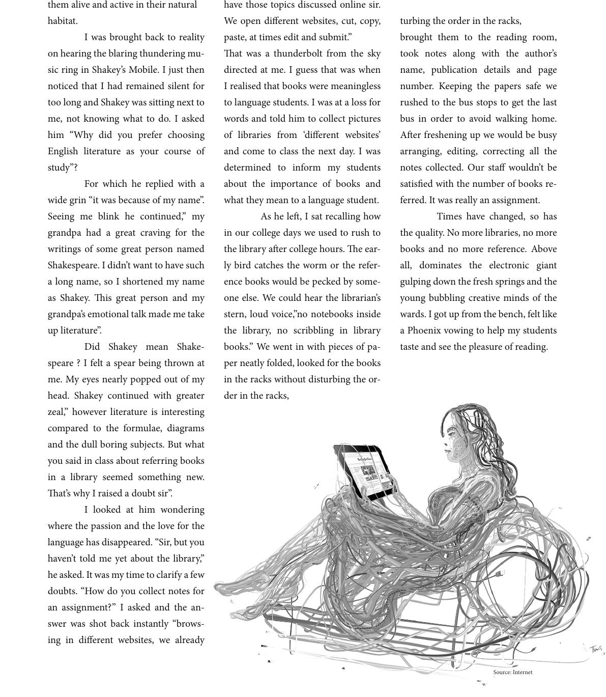

them alive and active in their natural
habitat.
I was brought back to reality
on hearing the blaring thundering mu-
sic ring in Shakey’s Mobile. I just then
noticed that I had remained silent for
too long and Shakey was sitting next to
me, not knowing what to do. I asked
him “Why did you prefer choosing
English literature as your course of
study”?
For which he replied with a
wide grin “it was because of my name”.
Seeing me blink he continued,” my
grandpa had a great craving for the
writings of some great person named
Shakespeare. I didn’t want to have such
a long name, so I shortened my name
as Shakey. is great person and my
grandpa’s emotional talk made me take
up literature”.
Did Shakey mean Shake-
speare ? I felt a spear being thrown at
me. My eyes nearly popped out of my
head. Shakey continued with greater
zeal,” however literature is interesting
compared to the formulae, diagrams
and the dull boring subjects. But what
you said in class about referring books
in a library seemed something new.
at’s why I raised a doubt sir”.
I looked at him wondering
where the passion and the love for the
language has disappeared. “Sir, but you
haven’t told me yet about the library,”
he asked. It was my time to clarify a few
doubts. “How do you collect notes for
an assignment?” I asked and the an-
swer was shot back instantly “brows-
ing in dierent websites, we already
have those topics discussed online sir.
We open dierent websites, cut, copy,
paste, at times edit and submit.”
at was a thunderbolt from the sky
directed at me. I guess that was when
I realised that books were meaningless
to language students. I was at a loss for
words and told him to collect pictures
of libraries from ‘dierent websites’
and come to class the next day. I was
determined to inform my students
about the importance of books and
what they mean to a language student.
As he le, I sat recalling how
in our college days we used to rush to
the library aer college hours. e ear-
ly bird catches the worm or the refer-
ence books would be pecked by some-
one else. We could hear the librarian’s
stern, loud voice,”no notebooks inside
the library, no scribbling in library
books.” We went in with pieces of pa-
per neatly folded, looked for the books
in the racks without disturbing the or-
der in the racks,
turbing the order in the racks,
brought them to the reading room,
took notes along with the author’s
name, publication details and page
number. Keeping the papers safe we
rushed to the bus stops to get the last
bus in order to avoid walking home.
Aer freshening up we would be busy
arranging, editing, correcting all the
notes collected. Our sta wouldn’t be
satised with the number of books re-
ferred. It was really an assignment.
Times have changed, so has
the quality. No more libraries, no more
books and no more reference. Above
all, dominates the electronic giant
gulping down the fresh springs and the
young bubbling creative minds of the
wards. I got up from the bench, felt like
a Phoenix vowing to help my students
taste and see the pleasure of reading.
Source: Internet